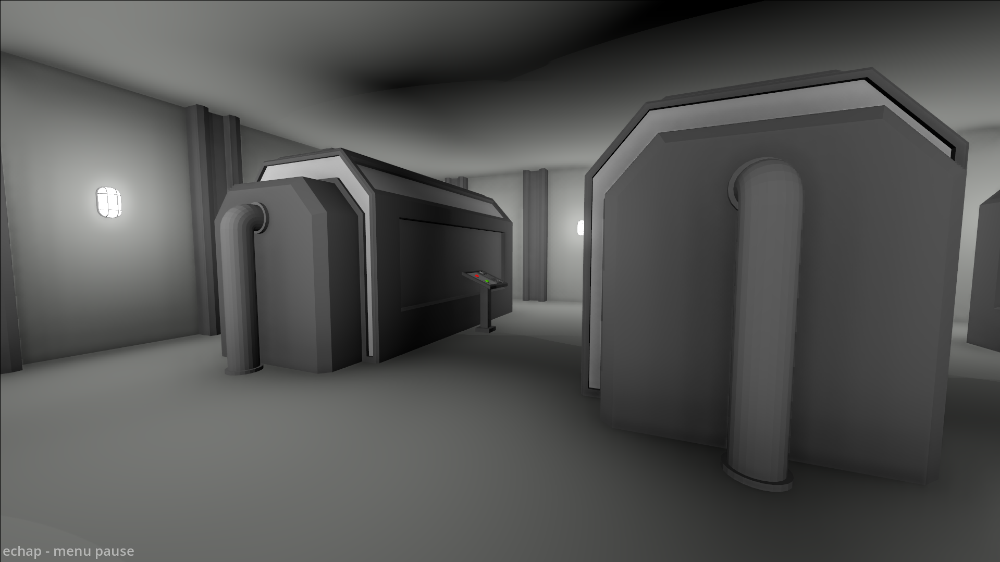
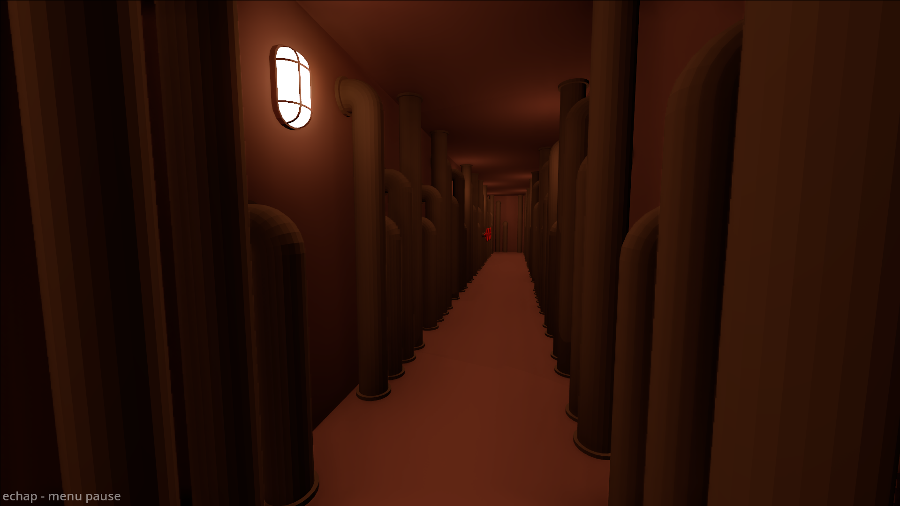

Nuclear Panic
Jeu vidéo
Brief
Nuclear Panic est un jeu développé en une semaine lors d’une game jam, en collaboration avec un ami.
Le joueur incarne un ingénieur chargé de maintenir la stabilité d’un réacteur nucléaire durant le poste de nuit. Il doit gérer la pression, le refroidissement et l’alimentation du réacteur, tout en réagissant à des incidents tels que des pannes de courant, des incendies ou des fuites radioactives.
J’ai réalisé la modélisation 3D, la création de l’environnement, les lumières et les interfaces UI, tandis que mon coéquipier s’est chargé de la programmation, des effets visuels et de la conception sonore.
Le jeu est disponible sur ma page Itch.io
Galerie



